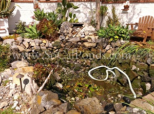
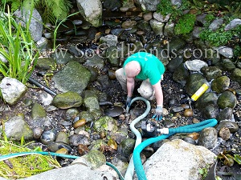
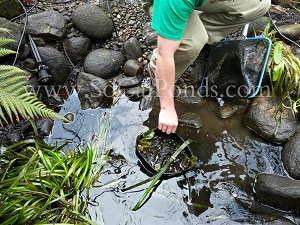

Pond Clean-Out
Even with advanced filtration and regular maintenance it is sometimes necessary to have your pond completely cleaned out. We refer to this as a "Spring Cleaning". This can be quite stressful on the pond inhabitants ie beneficial bacteria, fish, and plants.
{kind=link}
A pond clean-out usually involves removing the fish to temporary housing and draining the entire pond, then vacuuming the debris that has collected on the bottom of the pond. In some cases, a gravel-lined pond may need to have the gravel removed, washed and in rare cases replaced. In most cases we will not recommend draining the pond entirely but to clean out as much sludge as possible in the upper 2/3 of the pond.
{kind=link}
This is less stressful on the environment and will help preserve the beneficial bacteria. On most average sized ponds, we can complete the clean-out within only a few short hours. This quick turn around time not only allows for a swift recovery but is less stressful on the pond's ecosystem, more importantly on the beneficial bacteria that colonize throughout the pond.
{kind=link}
After the clean-out is performed our technicians will treat the water for chlorine, add appropriate additives and acclimate the fish to the new water before releasing them back into the pond.
In some rare cases the pond will experience "new pond syndrome", causing the water to resemble pea soup. This is normal and part of the nitrogen cycle that most new ponds go through. After a clean-out this "new pond syndrome" shouldn't last long, given that the pond was well established with a healthy filtration system. The few weeks after the clean-out it is best to not add any algae inhibiting products, like Algae Fix. We have found that adding these products only prolongs the stabilization process. During this time it is recommended to only add beneficial bacteria and clean the filters as needed. We also suggest waiting until the pond has stabilized before adding any new fish.